Mobil 390
Mobilen läggs om, den skalas inte ned. Reglerna nedan är hämtade ur de byggda blocken: vad som byter ordning, vad som staplas, vad som kollapsar och vad som aldrig får bli mindre än tummen.
Inventeringarna (inventering/*.md, mätningar vid 390 med getComputedStyle), .claude/skills/ampy-wireframe-ux/SKILL.md §3 (mobilomläggningen per familj), ampy-foretagsdata.md §9.5 (brytpunkter 992 / 768 / 480), sticky-barens leverans (tap-centrum), tokens.css (44 px-golvet finns inte som token: det står i koden i elcentral, eljour, sticky-bar, testimonials, fotobedömningen).
Reglerna
Det mörka resultatkortets glöd är kalibrerad för en 600 px-panel; sträckt över en telefon blir den en lerig wash. Glöden ankras om bakom siffran. Hero-2 lägger bilden bakom texten och byter till den bastanta scrimmen. Avdragsblocket centrerar H2:n och släpper nowrap på accenten så raderna balanserar.
CTA-bandet lägger porträttet överst (order -1) och centrerar texten. Visste-du-att lägger lampan överst. Eljour lägger samtalskortet över listan och flyttar källraden under listan. Hero-2 Z lägger formkortet under texten. Kalkylatorn lägger inputkortet först och resultatet under; diagnostiken lägger railens innehåll via display: contents och order runt scenen.
Under 400 px panelbredd byter kvittoraderna till etikett över värde, etiketten kliver in i caps-rollen (13 / 700) och pillarna förblir pillar. Byggårssegmentet radbryter med flex 1 1 30 %. En chip som blir ren text på mobil har tappat sin roll.
Railens två telefon-CTA:er kollapsar till EN sticky "Ring / Kontakta" på mobil; beskedets egen CTA blir den andra, aldrig en tredje knapp i stapel. Eljour-sidan: sticky-baren bär ring-knappen (kanon), symptomblocket bär nödknappen; två CTA-språk i samma viewport är en dokumenterad defekt att lösa (B6). Baren är 83 px hög med tap-centrum 45 px från underkanten (iOS gestremsa), body får bottenpaddingen server-side så inträdet inte ger layoutskift.
Träffytan får vara osynlig (prickarnas ::before -12 px, telefonlänkens padding 11 px med negativ margin) men aldrig mindre än 44 px. Rader i listor är 60 till 68 px. Under pointer:coarse växer mega-menyns länkar till 12 px vertikal padding. Ingen träffyta får styra layouten av misstag (footerns sociala ankare gav 201 px kolumnhöjd).
--aptext-xs ger 10,1 px på 390; eyebrow-rollen är därför 12 px fast. Inputs är minst 16 px så iOS inte zoomar. Brödtexten är 16,1 px (body-token), inte live-temats 14,1 (B20).
Text vänster, ikon höger (live-blockets grammatik). Etiketten får radbryta (text-wrap balance, lh 1.25) i stället för att skjuta ut ur gradienten (uppmätt -15 px på 320 i D2 före fixen). Hero-1 skalar knappen till 52 h / 15 px, en dokumenterad avvikelse mot CTA-kanon 58.
Separatorn försvinner när raden blir kolumn (proof), subline döljs (testimonials), gradienten vrids så ljusänden hamnar bakom korten (certifikat). Brytpunkterna är 992 / 768 / 480; blocken mäter helst mot sin egen bredd (@container) så de överlever en smal Bricks-kolumn.
Nav-länkarna döljs, burgaren visas, CTA:n behåller solid teal men krymper till 42 h. Drawern är ett vitt högerark 440 med "MENY"-eyebrow, platta accordions och en teal foot-CTA 56 h. Brytpunktstrappan går ned till 339 px.
Blocket får gå kant i kant när det är ett dokumentkort som ska läsas, inte när det är ett kort i ett band. Heros behåller 8 px och radie 18.
En bar som glider in under en tumme får aldrig ringa ett samtal (400 ms kall period). Tangentbordet uppe: baren försvinner utan animation. Hover finns inte: bara (hover:hover) and (pointer:fine) får hover-koreografi, annars fastnar den efter tap.
Sida vid sida: 1440 och 390
Samma block, mätt i källorna. Titta på vad som byter plats, inte på vad som blir mindre.
CTA-bandet: porträttet överst, knappen full bredd med chippen höger
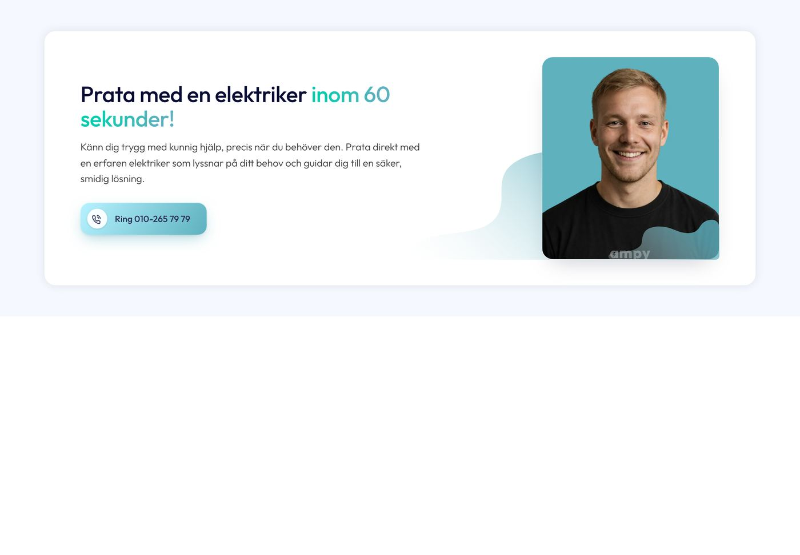
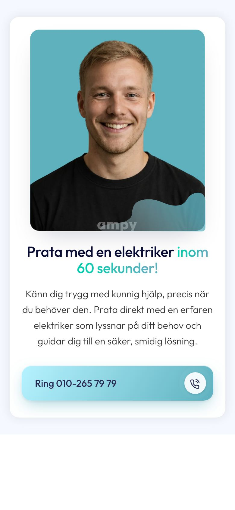
Diagnostiken: railen runt scenen, sticky CTA i botten
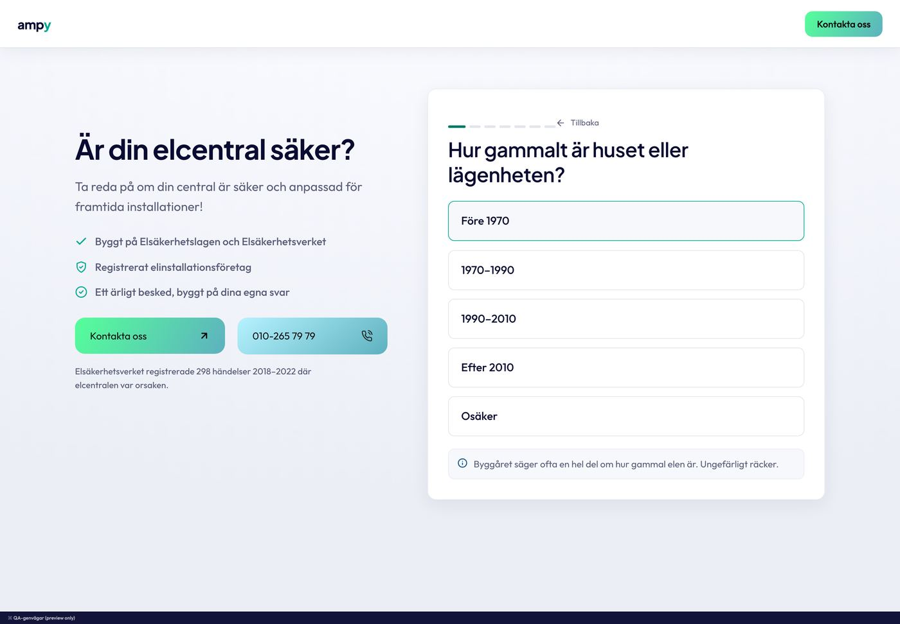
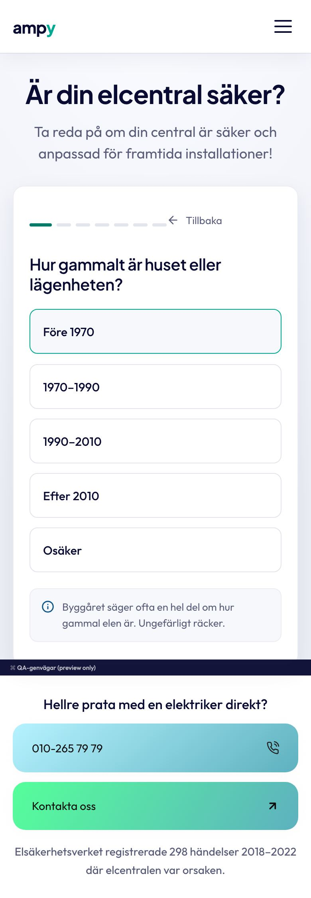
Kalkylatorn: inputkortet först, glöden omjusterad
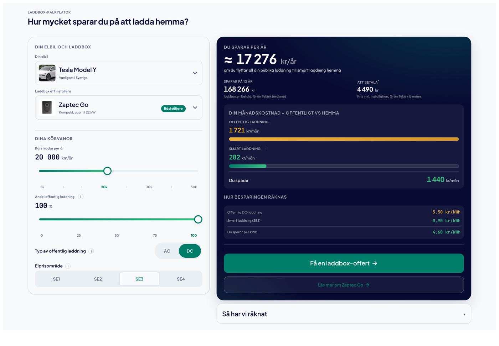
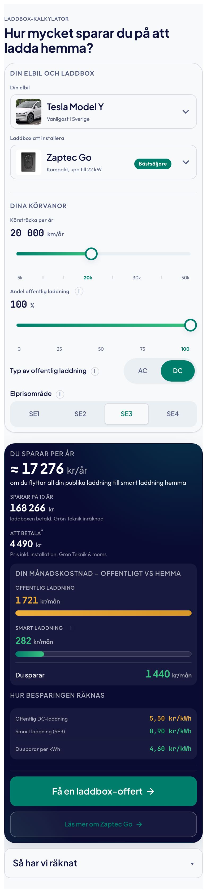
Eljour: kortet över listan, puls på knappen bara här
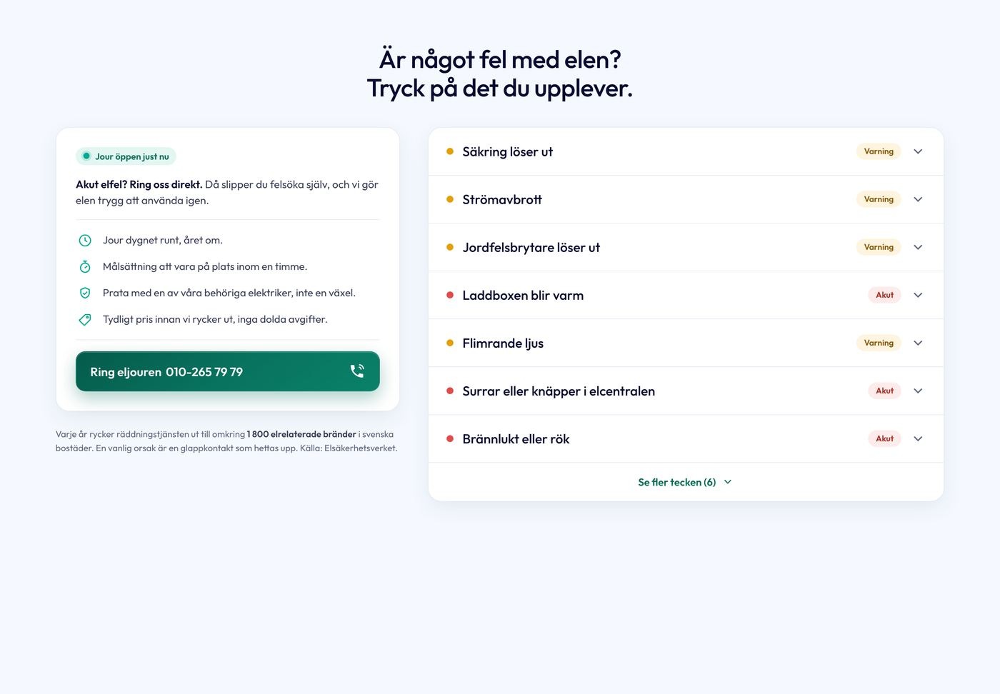
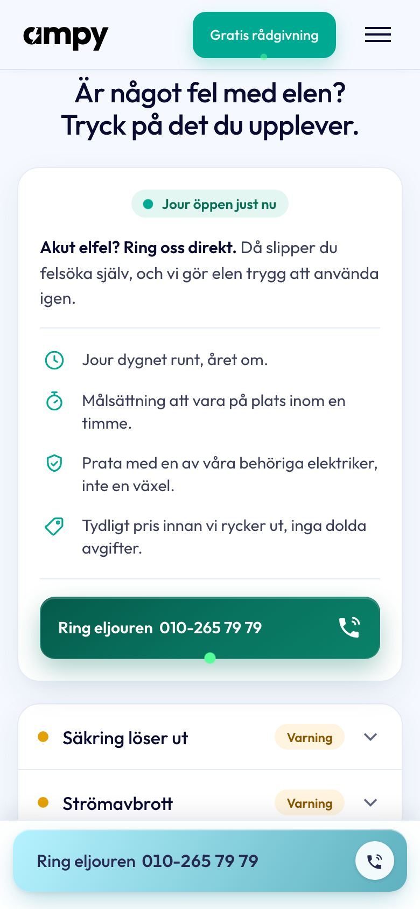
Hero-2: bilden bakom texten, bastant scrim
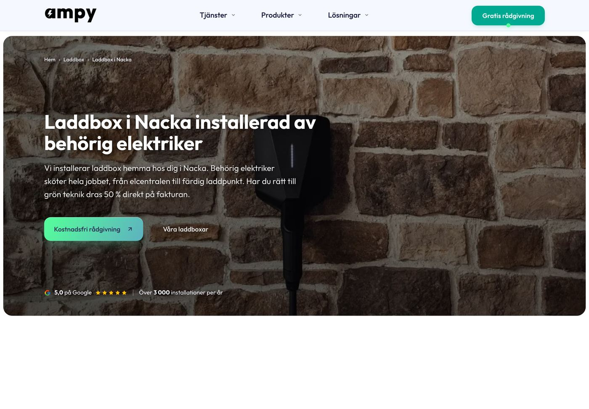
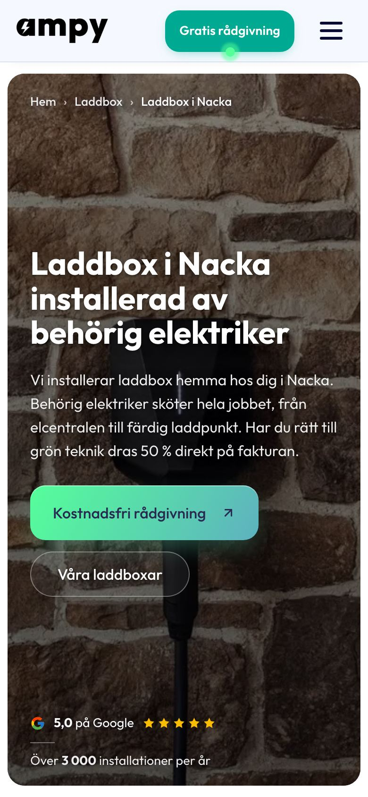
Header: bar 66 och drawer
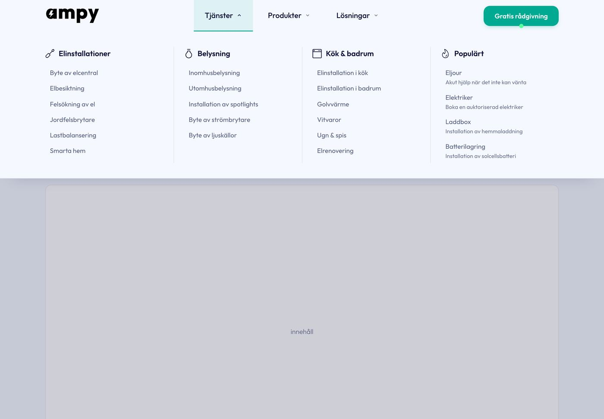
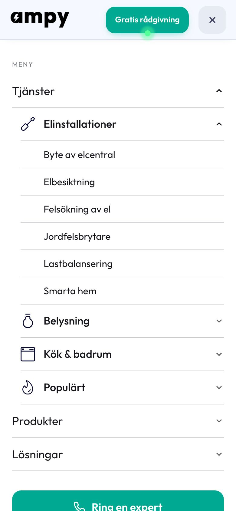
Checklista före leverans (mobil)
node tools/shot.mjsdesktop + mobil:overflowX: false,errors: []. Sidan scrollar aldrig i sidled.- Alla träffytor minst 44 px; text minst 12 px; fält minst 16 px.
- Blocket bryter mot sin egen bredd (@container) med @media-fallback för Safari under 16.
- Fixed element: server-printad body-padding, pixellåst höjd, ingen will-change i vila.
- reduced-motion släcker även pseudoelementens animationer (animation ärvs inte, ett bart * når aldrig ::after).
- En öppen panel i taget, stängda paneler inert, fokus flyttas dit det hör hemma.